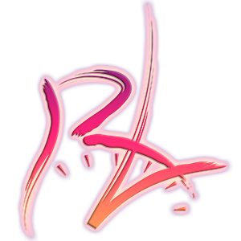

Howdy! welcome to my first post! its an exciting one to start with!
This morning, I received an email that I had been extremely excited about!
I learned that on 10/24/2021 (next sunday) I will receive a contract to march at Redline Percussion for the 2022 WGI Season!
I'll be playing aux percussion (RACK CITY BABYYYYY) which means I will have a big rack with all sorts of drums, cymbals and more to add more texture to our show.
at the world class level (Redline is a PIW group - PIW = Percussion Independent World class) the rack can be an extremely important part of the ensemble.
Over the course of the upcoming season, (November - Mid-April) I will not only meet the newest members, but grow closer to those I met prior to the pandemic when i marched in 2020.
I'm super excited to be able to march with my favorite group for a 2nd year, I can't wait to hear what our show will be!
RED HOOD FROM DC COMICS